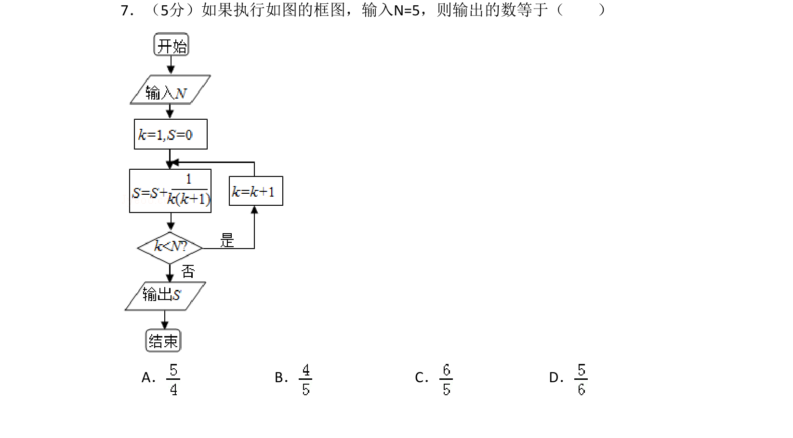
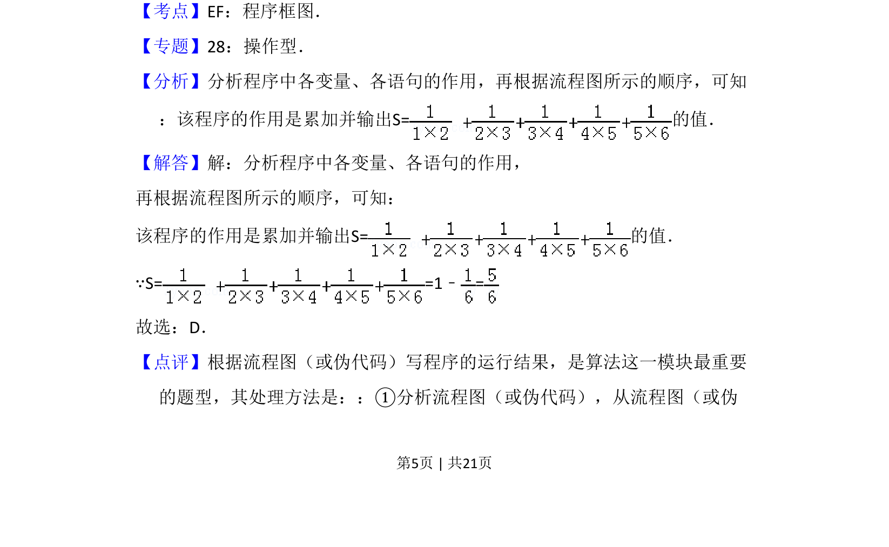
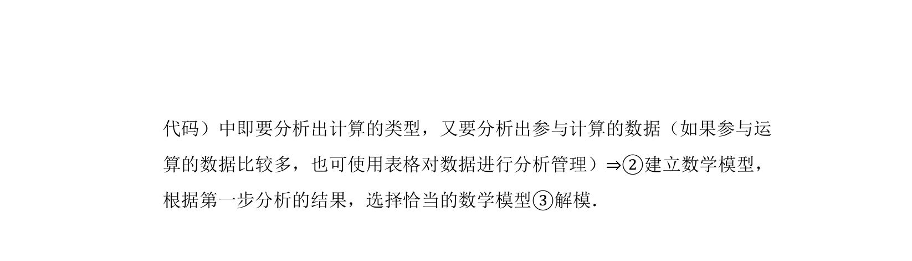

考点：程序框图 循环结构 累加求和

该题考查程序框图的执行，输入 N=5，通过循环累加分数求和并输出结果。


📄 原 PDF 第 5 页：
素材/真题/吉林/2008-2024·（吉林）数学高考真题/2010年高考数学试卷（理）（新课标）（解析卷）.pdf
7．（5分）如果执行如图的框图，输入N=5，则输出的数等于（ ） A．B．C．D．
【考点】EF：程序框图．菁优网版权所有 【专题】28：操作型． 【分析】分析程序中各变量、各语句的作用，再根据流程图所示的顺序，可知 ：该程序的作用是累加并输出S=的值． 【解答】解：分析程序中各变量、各语句的作用， 再根据流程图所示的顺序，可知： 该程序的作用是累加并输出S=的值． ∵S= =1﹣= 故选：D． 【点评】根据流程图（或伪代码）写程序的运行结果，是算法这一模块最重要 的题型，其处理方法是：：①分析流程图（或伪代码），从流程图（或伪